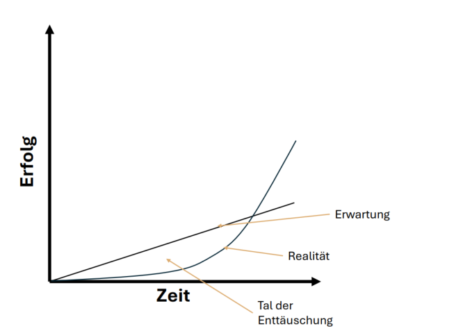

1:1 Mentaltraining
Individuelle Begleitung für deine Ziele.
Termin buchenDu willst deine Ziele nicht nur setzen – sondern auch erreichen.
Vielleicht hast du das schon öfter erlebt. Du setzt dir ein Ziel, startest motiviert und sobald es schwierig wird oder Ergebnisse ausbleiben, beginnt der Zweifel. Nicht weil dir der Wille fehlt, sondern weil die innere Orientierung fehlt, wenn es schwierig wird.
Genau hier setzt meine Arbeit an. Nicht mit neuen Vorgaben oder mehr Druck, sondern mit Orientierung an deinem inneren Leuchtturm – von innen heraus. So setzt du dir Ziele, die wirklich zu dir passen und erreichst sie nicht nur, sondern lebst sie langfristig.
Dein Weg zu mehr Klarheit beginnt hier. Wähle das Format, das am besten zu dir passt – und wir starten gemeinsam durch.
Individuelle Begleitung für deine Ziele.
Termin buchenDefiniere deine Ziele richtig!
Zum LeifadenDu setzt dir Ziele und meinst es ernst.
Doch sobald es länger dauert oder schwieriger wird als erwartet, beginnt der Zweifel. Du brichst ab, bevor du wirklich ankommst. Dann kommt ein neuer Vorsatz. Ein neuer Anfang. Und wenn sich das wiederholt, gibst du irgendwann auf. Oder du fängst gar nicht mehr an.
Das hat nichts mit mangelndem Willen zu tun. Und es sagt nichts über deinen Wert aus.
Stell dir vor, du setzt dir ein Ziel und bleibst ruhig, auch wenn es länger dauert. Nicht, weil es leichter wird, sondern weil du innerlich ausgerichtet bist.
Wir erwarten linearen Fortschritt – Schritt für Schritt nach oben. Doch Entwicklung verläuft anders. Es gibt Phasen ohne sichtbare Ergebnisse. Genau hier entsteht das Tal der Enttäuschung. Und genau hier geben viele auf. Nicht aus Schwäche, sondern weil Motivation ohne innere Orientierung nicht trägt.
Was fehlt, ist kein Druck, sondern ein innerer Fixpunkt. Ein innerer Leuchtturm. Wenn dein Warum klar ist und deine Identität dahintersteht, veränderst du nicht sofort dein Ziel, sondern zuerst deine Ausrichtung.
